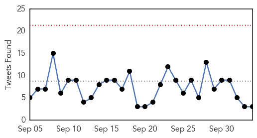
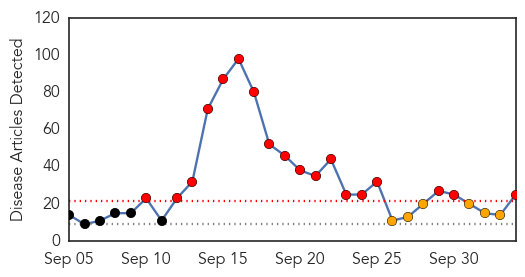

Ebola
30-Day Web Trend
0 alerts, 0 warnings

30-Day Twitter Trend
0 alerts, 0 warnings

Article Locations

Article Confidences

Top Articles:
- 1.000
- Ebola patient told hospital he had been to Liberia
- 0.999
- US CDC Director Holds Talks With Liberian Officials
- 0.996
- They were so close to Ebola, yet these people remained healthy 10 in household who had contact with victim Duncan did not contract the disease
- 0.994
- Hospital: Child remains in 'stable' condition, checked for Ebola virus
- 0.993
- Liberia’s president visits Seattle with thanks, warnings on Ebola
- 0.991
- America Set To Dispatch Troops to West Africa to Fight the Ebola Epidemic
- 0.987
- Will changing healthcare access prevent the outbreak of a global pandemic?
- 0.953
- SLeMSA Ends Two Days Workshop on Health
- 0.944
- ‘Human security depends on health security,’ Ban says, calling on nations to …
- 0.935
- 6 Mauritians Coming From Africa Placed in Isolation
- 0.818
- Our opinion: Ebola-type reaction to shootings needed
- 0.719
- youths in sierra leone
Top Tweets:
- 0.569
- Our opinion: Ebola-type reaction to shootings needed - Dubuque Telegraph Herald http://t.co/uNvG3QbFMo ebola EVD
- 0.569
- Our opinion: Ebola-type reaction to shootings needed - Dubuque Telegraph Herald http://t.co/JmDaqWqJmY ebola EVD
- 0.540
- Liberia now better prepared for Ebola president says during Seattle visit - The Seattle Times http://t.co/rKzmLcnghJ ebola EVD
Dengue Fever
30-Day Web Trend
18 alerts, 6 warnings

30-Day Twitter Trend
3 alerts, 0 warnings

Article Locations
Article Confidences

Top Articles:
- 0.996
- India faces worst dengue fever outbreak in years with more than 6,500 confirmed cases
- 0.995
- Cebu Lifestyle, The Freeman Sections, The Freeman
- 0.989
- No ZikV here, says health ministry
- 0.989
- Dengue cases drop in Jeddah
- 0.980
- Dengue surges, but Palace focuses on decline
- 0.976
- Philippines government allays dengue fears
- 0.964
- Delhiites can relax as dengue cases declining rapidly, assures Satyendra Jain
- 0.953
- Delhiites can relax as dengue cases declining rapidly, assures Satyendra Jain
- 0.952
- Action teams launched to combat dengue
- 0.952
- Now, refusing entry to dengue inspecting teams can cost you dear
- 0.949
- Dengue cases subsiding – Palace exec
- 0.947
- DOH is closely monitoring incidence of dengue –Palace
- 0.943
- Delhiites can relax as dengue cases declining rapidly, assures Satyendra Jain
- 0.942
- Dengue virus carrier detected last year
- 0.916
- CM takes notice of dengue fever outbreak
- 0.914
- DoH closely monitoring incidence of dengue cases
- 0.890
- Govt set to take on dengue in Multan
- 0.835
- Doctors ask Delhi government to issue an advisory clarifying dengue tests
- 0.797
- Nasim urges ward councilors to start dengue awareness campaign - Click Ittefaq
- 0.735
- Can Ayurveda help dengue patients?
- 0.667
- DOH extending help in areas with high cases of dengue - Palace
- 0.658
- City Hall fields workers, chemicals to curb dengue
- 0.650
- Doctors urge Delhi govt to issue advisory on dengue test
- 0.637
- Woman dies of dengue in BBH
- 0.510
- Mindanao Newsbits for October 4, 2015
Top Tweets:
-
No tweets found for Oct 04, 2015